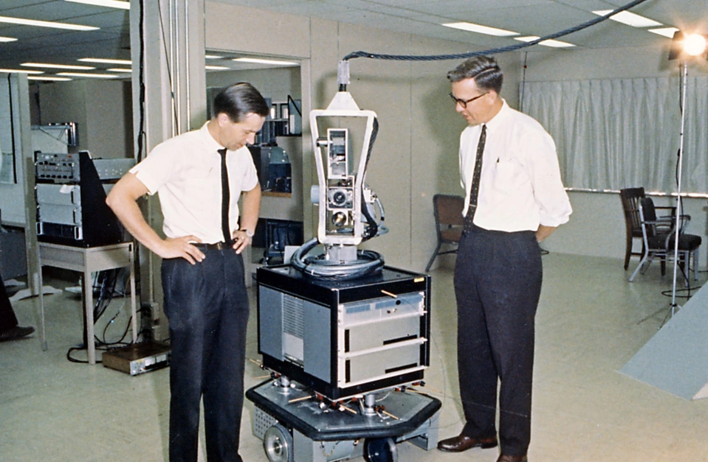

CONTENIDOS 
1950 Las Contribuciones Fundamentales de Alan Turing
Más allá de su biografía, el legado de Alan Turing reside en pilares conceptuales que dieron forma a la era
digital:

 La Máquina de Turing
(1936): Este no fue un dispositivo físico, sino un modelo teórico revolucionario.
Turing
imaginó una máquina abstracta que manipulaba símbolos en una cinta siguiendo un conjunto de reglas. Este
concepto
simple pero poderoso definió formalmente qué es un "algoritmo" y qué significa "computable". Se convirtió en la
base teórica de todas las computadoras modernas, estableciendo los límites de lo que puede y no puede ser
calculado por una máquina.
La Máquina de Turing
(1936): Este no fue un dispositivo físico, sino un modelo teórico revolucionario.
Turing
imaginó una máquina abstracta que manipulaba símbolos en una cinta siguiendo un conjunto de reglas. Este
concepto
simple pero poderoso definió formalmente qué es un "algoritmo" y qué significa "computable". Se convirtió en la
base teórica de todas las computadoras modernas, estableciendo los límites de lo que puede y no puede ser
calculado por una máquina.
El Test de Turing
(1950): En su artículo "Computing Machinery and Intelligence", Turing abordó la
pregunta
"¿Pueden pensar las máquinas?" de una manera práctica. Propuso el "Juego de la Imitación": si un interrogador
humano, al conversar con una máquina y una persona a través de un terminal, no puede distinguir cuál es cuál,
entonces la máquina puede ser considerada inteligente. Este criterio, conocido como el Test de Turing, se
convirtió en el objetivo fundacional y el estándar de referencia para el campo de la Inteligencia Artificial.
Podemos decir ,en efecto,que proporcionó el marco teórico y las preguntas correctas que hicieron posible la
informática y la inteligencia artificial. Su mente visionaria pasó de resolver los problemas
matemáticos más abstractos a aplicar esa lógica para descifrar códigos enemigos y, finalmente, para preguntarse
sobre el futuro de la inteligencia misma.
1961 ELIZA

Creada para explorar la comunicación entre
humanos y máquinas,ELIZA simuló la conversación utilizando una
metodología de concordancia y sustitución de patrones que daba a los
usuarios una ilusión de entendimiento por parte del programa, pero
no tenía ninguna representación que pudiera considerarse que
realmente comprendía lo que se decía por ninguna de las dos
partes. El guion más famoso, DOCTOR,
simulaba un psicoterapeuta de la escuela rogeriana (en la que el
terapeuta a menudo refleja las palabras del paciente al
paciente),y utilizaba reglas, dictadas en el guion, para
responder con preguntas no direccionales en las entradas de los
usuarios.
Como tal, ELIZA fue uno de los primeros chatterbots
("chatbot" modernamente) y uno de los primeros programas capaces de
ejecutar la prueba de Turing. El creador de ELIZA,Weizenbaum,
pensaba que el programa podía ser un método para explorar la
comunicación entre humanos y máquinas. Muchos académicos
creían que el programa podría influir positivamente en la vida de
muchas personas, especialmente aquellas con problemas psicológicos,
y que podría ayudar a los médicos que trabajan en el tratamiento de
estos pacientes. Aunque ELIZA era capaz de participar en el
discurso, no podía conversar con la verdadera comprensión. Sin
embargo, muchos usuarios tempranos estaban convencidos de la
inteligencia y la comprensión de ELIZA, a pesar de la insistencia de
Weizenbaum en lo contrario. El código fuente original de ELIZA había desaparecido desde su creación en la
década de 1960, ya que no
era habitual publicar artículos que incluyeran código fuente en ese
momento. Sin embargo, más recientemente, el código fuente MAD-SLIP
se ha descubierto en los archivos del MIT y se ha publicado en
diversas plataformas, como archive.org. El código fuente tiene un
gran interés histórico, ya que demuestra no sólo la especificidad de
los lenguajes y técnicas de programación en ese momento, sino
también el inicio de la abstracción y la abstracción de software
como medio para conseguir una programación de software sofisticada.
A continuación una simulación del código de ELIZA:
function ELIZA GENERATOR(user sentence) returns response
Let w be the word in sentence that has the highest keyword rank
if w exists
Let r be the highest ranked rule for w that matches sentence
response ← Apply the transform in r to sentence
if w = 'my'
future ← Apply a transformation from the ‘memory’ rule list to sentence
Push future onto the memory queue
else (no keyword applies)
Either
response ← Apply the transform for the NONE keyword to sentence
Or
response ← Pop the oldest response from the memory queue
Return response1966 SHAKEY

Desarrollado en el Stanford Research Institute, Shakey fue el primer robot móvil que podía percibir su entorno, razonar sobre sus acciones y planificar rutas.A diferencia de robots anteriores que seguían patrones preprogramados,Shakey utilizaba lógica para tomar decisiones. Podía analizar comandos como "empuja el bloque de la plataforma" y descomponerlo en sub-tareas ejecutables. Este pionero sentó las bases para la robótica moderna y la planificación automática.
1970 MYCIN
Especializado en diagnóstico de enfermedades infecciosas de la sangre, este sistema operaba con 500 reglas médicas y alcanzaba una precisión del 69%, comparable al 80% de expertos humanos.En pleno primer invierno de la IA,MYCIN demostró el potencial práctico de los sistemas expertos. Lo más innovador era su capacidad para explicar su razonamiento, mostrando la cadena lógica que llevaba a cada diagnóstico. Aunque nunca se implementó clínicamente por preocupaciones legales, revolucionó el enfoque de la IA aplicada a medicina.
1974-1993 Invierno de las I.A.
El primer invierno (1974-1980) surgió cuando sistemas como el Traductor Automático fallaron estrepitosamente,
llevando a recortes drásticos en financiamiento.
Fueron períodos de estancamiento causado por expectativas irreales que chocan con las limitaciones técnicas, lo que provoca una drástica reducción de la financiación y el interés tras los primeros avances de la lógica simbólica y el fracaso comercial de los sistemas expertos. Hoy, con el boom de la IA generativa, muchos especulan con un nuevo invierno. Los motivos son la posible saturación del mercado, las promesas exageradas de una inteligencia a nivel humano, los altos costes energéticos y las limitaciones actuales de los modelos, como las "alucinaciones" o los sesgos.En esencia, es el ciclo recurrente del entusiasmo desmedido que precede a la desilusión.
1980 DeepBlue

Emergiendo después del periodo de invierno de las IA , Deep Blue marcó un renacimiento simbólico para ellas. Cuando venció al campeón mundial Garry Kasparov en 1997, estasupercomputadora de IBM podía evaluar 200 millones de posiciones por segundo. Lo más significativo fue su uso de hardware especializado y algoritmos que balanceaban búsqueda exhaustiva con evaluación posicional. Deep Blue demostró que las máquinas podían superar a humanos en dominios que requerían pensamiento estratégico profundo.
1987 NETtalk
NETtalk fue una red neuronal pionera que aprendió a convertir texto en habla. Lo notable era que aprendía
mediante ejemplos, mejorando gradualmente su pronunciación hasta alcanzar 95% de precisión.
Demostró que las redes neuronales podían adquirir habilidades complejas mediante aprendizaje, no solo programación explícita,
anticipando el enfoque del aprendizaje profundo moderno.
A continuación podemos observar una de las primeras pruebas de este modelo:

2007 IBM Watson

IBM Watson originalmente se pensó en mediados de 2007, pero surge finalmente en 2011 no como otro sistema de IA
especializado, sino como una demostración pública sin
precedentes de comprensión del lenguaje natural. Su desarrollo, iniciado en 2006 por IBM, tenía un objetivo
aparentemente simple pero técnicamente revolucionario: competir y vencer en Jeopardy!, un programa donde las
preguntas están cargadas de sarcasmo, juegos de palabras y referencias culturales que hasta entonces se
consideraban exclusivas de la comprensión humana.
La arquitectura de Watson, basada en la plataforma DeepQA, representaba un salto cualitativo respecto a sistemas
anteriores. Mientras los motores de búsqueda tradicionales se limitaban a encontrar documentos relevantes usando
palabras clave, Watson ejecutaba un sofisticado proceso en cuatro etapas: primero, descomponía la pregunta
analizando su estructura lingüística completa; segundo, generaba múltiples hipótesis de respuesta consultando
simultáneamente millones de fuentes; tercero, evaluaba la evidencia para cada hipótesis calculando niveles de
confianza; y finalmente, sintetizaba la respuesta más precisa. Todo esto ocurría en segundos, gracias a 2.880
núcleos de procesamiento analizando en paralelo el equivalente a 200 millones de páginas de información.
Lo que realmente diferenciaba a Watson de otros sistemas era su enfoque único. A diferencia de los sistemas
expertos de los 80, que operaban con reglas predefinidas, aprendía dinámicamente de corpus documentales
masivos. Y a diferencia de los actuales modelos de lenguaje como GPT, que generan respuestas estadísticamente
plausibles, Watson fundamentaba cada respuesta en evidencias específicas y medibles, priorizando la precisión
factual sobre la fluidez conversacional.
La importancia histórica de Watson trasciende a su victoria televisiva. Debido a que demostró que las máquinas podían
comprender el lenguaje humano en toda su complejidad, sentando las bases técnicas para aplicaciones prácticas en
medicina - donde analiza historiales médicos y literatura científica para asistir en diagnósticos, finanzas e
investigación científica. Watson representa el puente crucial entre la IA simbólica del siglo XX y el machine
learning moderno, recordándonos que la verdadera inteligencia artificial no se trata solo de procesar texto,
sino de comprender significado y fundamentar el conocimiento.
2012 AlexNet
La arquitectura de AlexNet introdujo innovaciones fundamentales que definirían la próxima década de
investigación en IA. Con sus ocho capas profundas (cinco convolucionales y tres fully-connected), demostró por
primera vez que las redes neuronales convolucionales profundas podían escalarse efectivamente. Pero lo
verdaderamente revolucionario fue cómo combinó tres elementos clave: redes neuronales convolucionales profundas,
unidades de procesamiento gráfico (GPUs) y el dataset masivo de ImageNet. Las GPUs, tradicionalmente usadas para
renderizar videojuegos, permitieron entrenar esta red monstruosa en tiempos razonables, procesando los 1.2
millones de imágenes de ImageNet con sus 1,000 categorías diferentes.
Técnicamente,incorporó avances cruciales como la función de activación ReLU, que aceleró dramáticamente
el entrenamiento al evitar el problema del vanishing gradient; dropout para prevenir overfitting regularizando
el modelo; y augmentación de datos para expandir artificialmente el dataset de entrenamiento. Su diseño dual en
dos GPUs GTX 580 no fue solo una necesidad práctica, sino que demostró que el entrenamiento distribuido era
viable para modelos de deep learning.
Este modelo cambió el paradigma completo de la visión por computadora, desplazando los métodos tradicionales basados en características
hand-crafted como SIFT y HOG hacia el aprendizaje end-to-end. Probó que las redes profundas podían aprender
representaciones jerárquicas automáticamente desde los datos, desde bordes simples en las primeras capas hasta
características complejas específicas de objetos en capas profundas.
El legado de AlexNet es inmenso: inspiró una explosión de arquitecturas profundas como VGG, GoogLeNet y ResNet;
democratizó el deep learning al mostrar que las GPUs comerciales podían usarse para investigación seria; y
estableció el template para la investigación moderna en IA.
2020-Actualidad AlphaFold 2
En 2020, DeepMind presentó AlphaFold 2, un sistema que resolvería uno de los grandes misterios de la biología
moderna: predecir la estructura tridimensional de las proteínas a partir de su secuencia genética. Este no era
un problema computacional más, sino un desafío que llevaba 50 años desafiando a científicos en todo el mundo,
con profundas implicaciones para la medicina y la comprensión de la vida misma.
La genialidad de AlphaFold 2 reside en su arquitectura única, que combina redes neuronales con un profundo
entendimiento biofísico. A diferencia de aproximaciones anteriores, el sistema utiliza un mecanismo de atención
evolutiva que analiza cómo han co-evolucionado diferentes partes de las proteínas a través de especies,
revelando pistas sobre su estructura espacial. Pero su verdadera innovación es el módulo de geometría
tridimensional, que construye directamente modelos atómicos precisos mediante transformaciones espaciales
iterativas, como si armara un rompecabezas molecular en tiempo real.

El verdadero legado de AlphaFold 2 trasciende lo técnico. Está acelerando la investigación de enfermedades como el Alzheimer y el Parkinson, facilitando el diseño de enzimas para combatir la contaminación, y revolucionando el desarrollo de medicamentos al revelar dianas terapéuticas antes invisibles. Más importante aún, ha establecido un nuevo paradigma de colaboración entre la IA y la ciencia fundamental, demostrando que las máquinas pueden ser socias en la expansión del conocimiento humano.
En el panorama actual de inteligencia artificial, AlphaFold 2 representa la culminación de lo que la tecnología puede lograr: no solo resolver problemas complejos, sino abrir nuevas fronteras para el entendimiento humano y el avance del bienestar global.
- cultura.gob.ar-Alan Turing el padre de la inteligencia artificial
- wikipedia.org- ELIZA
- wikipedia.org- Invierno IA
- wikipedia.org-Historia de la inteligencia artificial
- ibm.com- brief history of IBM AI
- Archive.org DTIC ADA458918: Shakey the Robot
- scientificamerican- 20 years after deep-blue
- deepmind.google-alphafold/
- britannica.com-MYCIN